Protege el mar
El pescado es un alimento con gran valor nutritivo. Aporta a la dieta proteínas y vitaminas del grupo A, B y D. Es alto en minerales como el calcio, el yodo, el magnesio y el zinc. Además, el pescaso es uno de los alimentos que aportan a nuestra dieta el ácido graso omega-3, antiinflamatorio, antioxidante y cardioprotector, por eso ses importante mantenerlo en nuestra dieta.
-
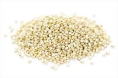
Quinoa
Proteínas, omega-3, calcio, hierro, magnesio y vitaminas C, E, B1 y B2
-

Amaranto
Proteínas, vitaminas A, B, C, B1, B2, B3, calcio, hierro y fósforo
-

Trigo sarraceno
Proteínas, omega-3, omega-6, vitaminas del grupo B, hierro y magnesio
-

Semillas de cáñamo
Proteínas, vitamina E, B1, B2, fósforo, potasio, magnesio, calcio y hierro
-
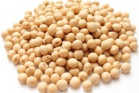
Soja
Proteínas, calcio, hierro, fósforo y potasio
-
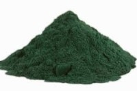
Espirulina
Proteínas, calcio, potasio, magnesio, vitamina E y del grupo B
-
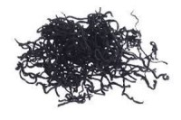
Alga hiziki
Además del sabor aporta yodo, hierro, vitaminas B y A, fósforo y antioxidantes.
-

Paprika
Vitamina A, B2, B1, hierro, potasio y fósforo
-

Pimienta rojo
Vitamina A y C
-
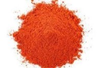
Pimienta de cayenna
Vitamina A
-
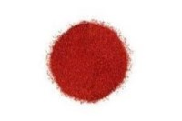
Polvo de chile
Vitamina A, B2, B3, B6, E, K, hierro y magnesio
-
Batata
Vitamina A
-
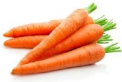
Zanahorias
Vitamina A
-
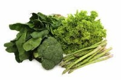
Verduras de hoja verde
Vitamina A, vitamina D y magnesio
-

Tahini
Vitamina B, A, C y zinc, calcio, hierro, magnesio y potasio
-
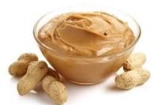
Maní o mantequilla de cacahuete
Vitamina B y zinc, potasio, magnesio, calcio y hierro
-
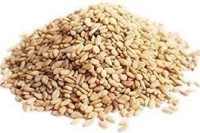
Semillas de sésamo
Fuente de vitamina D y zinc
-
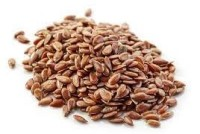
Semillas de lino
Omega-3 y vitamina D
-
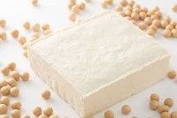
Tofu
Vitamina D, hierro y fósforo
-

Nueces
Vitamina D, omega-3, calcio, fósforo y potasio
-
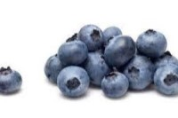
Arándonos
Yodo y potasio
-
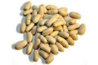
Alubias
Yodo, magnesio, potasio y calcio
-

Fresas
Yodo y vitamina C
-

Sandía
Magnesio
-
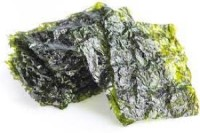
Alga nori
Además del sabor aporta yodo, potasio, hierro, sodio y vitaminas A y B
-

Semillas de chía
Omega-3, hierro, fósforo, calcio, vitamina A y B1
-

Aceite de cánola
Omega-3, omega-6, rico en ácidos grasos, vitaminas E y K
-
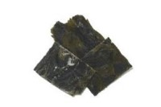
Alga kombu
Además del sabor aporta yodo, potasio, hierro, calcio, fibroso, prebiótico y antioxidante.
-

Aceite de soja
Omega-3
-
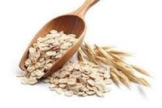
Avena
Omega-3, vitaminas del grupo B, potasio, magnesio y calcio
-
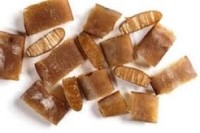
Alga cochayuyo
Además del sabor, aporta yodo, potasio, calcio, hierro, magnesio y omega-3
-
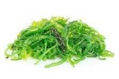
Alga wakame
Además del sabor, aporta yodo, calcio, vitamina B y ácido fólico
0 de 0